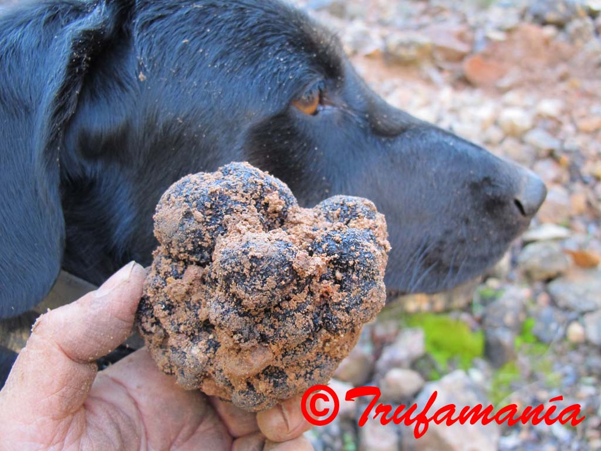

TRUFAMANIA
Bienvenidos a Trufamania, una web dedicada al conocimiento de las trufas, su gastronomía, sus especies comestibles y su fascinante mundo. Además de contenidos divulgativos, encontrarás fichas detalladas de las principales especies europeas y de algunas especies descritas recientemente.
Ahora somos una web divulgativa
Nuestra etapa de venta de trufas frescas ha terminado. Conservamos estas páginas como archivo de fotografías, recetas, especies y recuerdos de campo, para que sigan siendo útiles a quienes quieran acercarse al mundo de la trufa.
Fascinados por las trufas, hemos querido compartir algunos de sus misterios. Aunque ya eran muy apreciadas desde la Edad Antigua, siguen siendo unas grandes desconocidas. Nacen ocultas bajo tierra, a menudo en terrenos pobres, calizos y pedregosos, asociadas a las raíces de algunos árboles, y para su búsqueda son necesarios perros debidamente adiestrados. Algunas, como la trufa negra de invierno, Tuber melanosporum, han sido consideradas auténticos diamantes de la cocina.
{kind=link}

Trufa negra recién encontrada con la ayuda de nuestros perros truferos.
Contenidos principales
Las trufas
Qué son, cómo viven, por qué son tan apreciadas y cuáles son las principales especies comestibles.
Gastronomía
Consejos para conservar, limpiar y utilizar la trufa en cocina, aprovechando mejor su aroma.
Trufas del desierto
Terfezias y otras trufas de zonas áridas, muy interesantes desde el punto de vista cultural y gastronómico.
Falsas trufas
Hongos hipogeos y especies parecidas a las trufas verdaderas, con fotografías y explicaciones para diferenciarlas.
Vídeos y relatos
Recuerdos, vídeos y pequeñas historias relacionadas con la búsqueda, la cultura y la experiencia trufera.
Fichas descriptivas
Información detallada sobre las principales trufas europeas, trufas del desierto y otros hongos hipogeos, con fotografías y datos morfológicos. Incluye especies descritas por primera vez por Trufamania y publicadas en revistas científicas internacionales.
Nuevas especies descritas
Antonio Rodríguez ha colaborado, junto al Grupo de Investigación Micología-Micorrizas-Biotecnología Vegetal de la Universidad de Murcia, en la descripción científica de 21 especies nuevas de hongos hipogeos (Tuber, Terfezia, Tirmania y Eremiomyces), publicadas en revistas científicas internacionales revisadas por pares e indexadas como Persoonia, Phytotaxa y Mycotaxon. Como primer autor ha descrito Tuber alcaracense, Tuber buendiae, Tuber lusitanicum, Tuber zambonelliae, Tuber suaveolens, Tuber davidlopezii, Tuber mohedanoi, Eremiomyces innocentii, Terfezia dunensis, Terfezia cistophila y Terfezia albida.
Un archivo abierto sobre la trufa
Trufamania queda como testimonio de años de búsqueda, aprendizaje, fotografías, cocina y divulgación. Esperamos que siga siendo útil para aficionados, cocineros, naturalistas y curiosos que se acerquen por primera vez a este universo oculto.

|
Encarna Buendía trufamania@gmail.com |

|
Antonio Rodríguez trufamania@gmail.com |